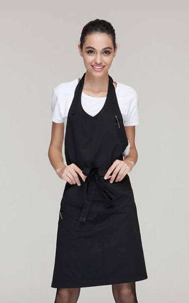

艾薇儿-拉维尼
DUZU 公司策划艾薇儿出生于1994年3月1日的加拿大安大略省伦敦的圣若瑟医院，并在安大略省的斯特拉特 福成长。小艾的母亲怀孕时年仅17岁，而他的父母结婚10个月后就离婚， 因此他从小由自己的母 亲、外公和外婆养大。
艾薇儿从小对曲棍球、足球和国际象棋感兴趣， 并一直追求自己的音乐梦想。 他从小自学了 钢琴、鼓、吉他和小号。从五岁起他就无师自通，自学了钢琴、打鼓、 吉他和小号， 华横溢的比 伯还非常热爱唱歌，他的歌声清脆而优美。早在2007年贾斯汀12岁时，在斯特拉特福德当地的歌 唱比赛中演唱尼欧的歌曲《So Sick》并获得了比赛的第二名。